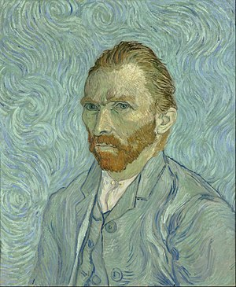
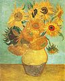

Irises - 1889
Vincent Van Gogh was born on March 30, 1853 in Zundert in the southern Netherlands. He was the son of a pastor. He started working in the Hague branch of an international art dealing firm. Van Gogh was disinterested by his job and was fired in 1876. He then became a preacher in a mining community in Belgium. In 1880 he decided to start drawing and painting. In 1886, Vincent joined his brother Theo in Paris. He met various artists there including: Degas, Toulouse-Lautrec, Pissaro and Gauguin. Gauguin and Van Gogh became close friends. In this period, Vincent painted a lot of self-portraits and in 1888, he relocated to Provence in France. Van Gogh asked his close friend Gauguin to join him but they started fighting and Vincent menaced Gauguin with a razor. He then severed his left ear because he felt bad. After that Van Gogh experienced a deterioration in his mental health and spent time in psychiatric hospitals.
Self-Portrait - 1889
On July 29, 1890 in the small village of Auvers-sur-Oise Vincent Van Gogh shot himself in the stomach and died two days later. The gun he used was found in 1965 by a farmer who gave it to the owners of an auberge in his village, the gun was passed down through generations until it was put up for auction. In June 2019, the gun was bought for $180,000.

Self-Portrait with Bandaged Ear -1889
Van Gogh was a Post-Impressionist. The definition of Post-Impressionism is: "the work or style of a varied group of late 19th-century and early 20th-century artists including Van Gogh, Gauguin, and Cézanne. They reacted against the naturalism of the impressionists to explore color, line, and form, and the emotional response of the artist, a concern which led to the development of expressionism."

Almond Blossoms - 1890
The Van Gogh Museum located in Amsterdam is the world's largest collection of works by Vincent Van Gogh. They have the famous "Sunflowers" exhibition and "The Recovered Van Gogh Paintings Restored Exhibition".
Sunflowers - 1889

The Starry Night - 1889